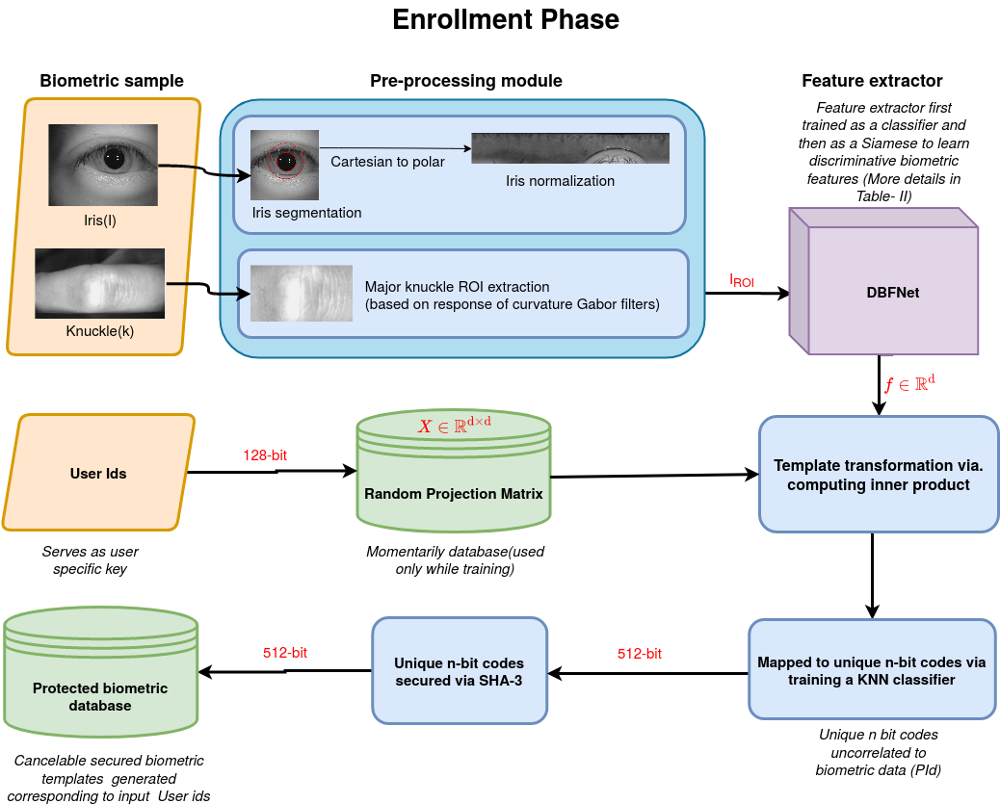
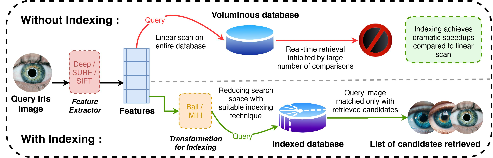

|
Chirag Vashist
Hello There! My name is Chirag Vashist. I am a Ph.D. candidate at Simon Fraser University, Burnaby. I am affiliated with APEX Lab and my advisor is Dr. Ke Li. |

|
ResearchI'm interested in computer vision, deep learning and generative AI. Some papers are highlighted. |
|
|
Rejection Sampling IMLE: Designing Priors for Better Few-Shot Image Synthesis
Chirag Vashist, Shichong Peng, Ke Li ECCV, 2024 project page / arXiv / video / code We identity an issue with the current IMLE-based methods and propose a novel approach to address it. We achieve state-of-the-art performance on few-shot image generation tasks. |
|
 |
A generic framework for deep incremental cancelable template generation
Avantika Singh, Chirag Vashist, Pratyush Gaurav, Aditya Nigam Neurocomputing journal We address the security and privacy concerns of biometric templates generated via deep networks. We propose a cancelable biometric authentication approach. This is the first work in which deep cancelable templates are generated incrementally to the best of our knowledge. |
|
 |
IHashNet: Iris Hashing Network based on efficient multi-index hashing
Avantika Singh, Pratyush Gaurav, Chirag Vashist, Aditya Nigam IJCB, 2020 paper We propose an iris indexing scheme using real-valued deep iris features binarized to iris bar codes (IBC) compatible with the indexing structure. For indexing the iris dataset, we have proposed a loss that can transform the binary feature into an improved feature compatible with the Multi-Index Hashing scheme. |
|
Code from Jon Barron's website. |